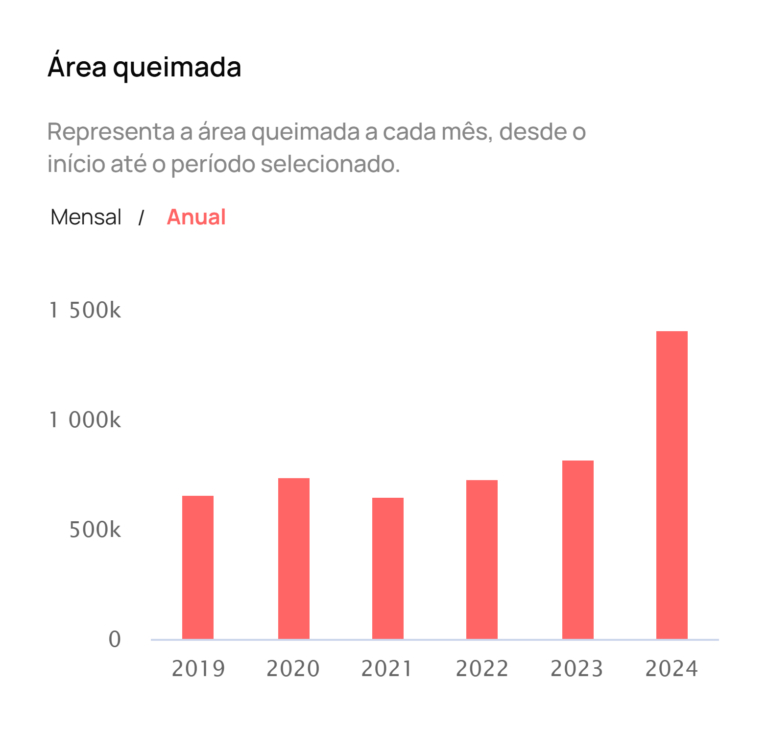
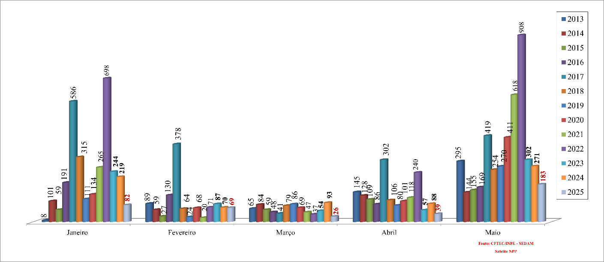

Meu nome é Matheus, sou estudante de graduação em Análise e Desenvolvimento de Sistemas. Este site faz parte de um projeto de atividade extensionista alinhado com a minha universidade e tem como objetivo trazer à minha comunidade conhecimento sobre práticas sustentáveis com base em Objetivos de Desenvolvimento Sustentável apresentados pela Organização das Nações Unidas(ONU).
Decidi tratar diretamente deste tema tendo em vista os eventos climáticos e a intensidade dos efeitos negativos das queimadas sobre diversas cidades do estado e, principalmente, sobre Porto Velho.
Em 2024 tivemos um estado de extrema preocupação quanto às queimadas onde foi registrado um total de 7.282 focos de incêndios de janeiro a setembro segundo o Instituto Nacional de Pesquisas Espaciais (INPE), havendo um aumento de 169% se comparado com 2023 e, sendo Porto Velho responsável por 32% dos casos.
Área queimada em hectares. Créditos: monitor do fogo do Mapbiomas (2024)
Apenas no mês de agosto de 2024 foi registrado um total 1076 atendimentos de pacientes com queixas de falta de ar nas Unidades de Pronto Atendimento, tendo um aumento de 50% se comparado ao mesmo período no ano anterior.
Histórico de queimadas no estado. Créditos: Queimadas, INPE (2025)
A imagem acima mostra o histórico mensal com a quantidade de focos de calor no estado e, nela, é possível notar que houve uma redução significativa quanto à quantidade de queimadas em 2025, porém, ao mesmo tempo, já é possível notar o grande aumento nas queimadas conforme a diminuição das chuvas.
Recentemente a Secretaria Municipal do Meio Ambiente(SEMA) tem ministrado diversas visitas ao Parque Natural de Porto Velho para alunos da rede municipal visando formar cidadãos mais conscientes através de atividades que integram a Educação ambiental. Podemos pegar como exemplo a visita dos alunos da Escola Municipal Bhoemundo Álvares Afonso onde foram conduzidas dinâmicas interativas e explicações sobre a fauna, a flora e a importância dos recursos naturais protegidos na área do parque. Esta ação de visitas ao parque natural da cidade também foi ministrada com alunos de diversas outras escolas, como por exemplo, a visita de 180 alunos da Escola Estadual Lydia Johnson ao Parque Natural e ao Viveiro Municipal onde, além do passeio, uma palestra educativa foi ministrada.
Além destas atividades educativas, a Prefeitura abriu um edital de chamamento público para celebrar termo de cooperação com organização para prevenir e combater incêndios urbanos, rurais e florestais no município. O objetivo é selecionar uma organização experiente e especializada para atuar entre julho a novembro de 2025 em regime de plantão 24h/dia, 7 dias na semana e também elaborar, implantar e executar os planos de trabalho.
Seguindo pelo mesmo caminho, o Tribunal de Contas do Estado de Rondônia(TCE-RO) reuniu, no dia 2 de maio, autoridades estaduais para cobrar ações concretas e coordenadas de prevenção e combate às queimadas e incêndios florestais visando prevenir que o cenário de 2024 se repita. Durante esta reunião, foi anunciado pelo estado um investimento de R$88 milhões e seu plano para 2025, onde foi apresentado o planejamento de criar bases descentralizadas, uso de viaturas, aeronaves e capacitação de equipes para enfrentamento. Neste encontro também foram apresentados números pelo governo estadual, onde, somente em 2024, 190 autos de infrações foram lavrados, totalizando R$48 milhões em multas relacionadas a desmatamento ilegal e queimadas ilegais, além de prisões e apreensões de equipamentos.
Também quanto às queimadas ilegais, o governo estadual apresentou a Operação Rondônia Verde, onde houve um preparo intensivo de 929 civis de 51 municípios treinados por instrutores do Corpo de Bombeiros Militar de Rondônia(CBMRO) para atuação terrestre e aérea durante os meses críticos da estiagem, sendo uma das principais apostas do estado no enfrentamento das queimadas ilegais e incêndios ilegais.
No dia 22 de julho, foi publicado um relatório em uma notícia no site da Secretaria Municipal do Meio Ambiente, onde, o secretário afirmou que durante os meses de junho e julho, foram atendidas 111 denúncias pelo canal de atendimento o que resultou em mais de R$120 mil em multas contra infratores. “Estamos focados no nosso objetivo, atendendo o que determina a legislação e às determinações do prefeito Léo Moraes. Não podemos tolerar ações que degradam o meio ambiente e ainda prejudicam a saúde das pessoas. Queremos uma cidade mais sustentável e com mais qualidade de vida para as pessoas, mas é preciso que a população nos ajude fazendo denúncias”, destacou o secretário Vinícius Miguel (Sema). “Nosso objetivo é orientar e educar, entretanto, quem for flagrado praticando queimadas urbanas será autuado”, enfatizou o Secretário.
Para este ano, foi projetada uma redução de 50% nas queimadas e de 40% no desmatamento ilegal em áreas prioritárias até o final de 2025 e, para os meses mais críticos de estiagem, foi previsto um reforço logístico com aeronaves e viaturas para dar uma resposta rápida aos focos detectados.
Por fim, podemos concluir que, tanto a gestão municipal quanto a estadual, têm dado a devida importância para a crise ambiental de Rondônia e, os gestores reforçam a importância da colaboração dos cidadãos junto ao poder público para que tenhamos um horizonte de futuro e sem fumaça.
A inalação da fumaça das queimadas pode causar irritação nos olhos e nas vias respiratórias, agravando sinais e sintomas em pessoas com asma, bronquite e outras doenças pulmonares.
A exposição à fumaça e partículas inaláveis pode aumentar o risco de condições cardiovasculares, tais como o infarto agudo do miocárdio e o acidente cardiovascular cerebral, principalmente em pessoas com comorbidades preexistentes.
Em muitos casos as queimadas saem do controle, e naqueles em que estas causam perda de moradia ou meio de subsistência, podem levar à depressão e até estresse pós-traumático, sem contar a ansiedade.
Comunidades inteiras podem ser obrigadas a se deslocarem por conta das queimadas e de seus efeitos na saúde, sobrecarregando assim, as unidades de pronto atendimento onde estas se concentrarem.
Idosos, gestantes e crianças menores de 5 anos pertencem aos grupos de risco e devem ter atenção redobrada.
Deve-se atentar para que os cuidados sejam ainda maiores durante o intervalo de julho a outubro, pois são os meses em que se concentra 79% das queimadas no Brasil.
Obs: Em casos de incêndios que coloquem residências ou grandes áreas de mata em risco, o ideal é ligar diretamente para o 193, número de emergência do Corpo de Bombeiro Militar.
Deixarei algumas fontes de dados e estatísticas ambientais que utilizei para criar o site e que podem ser interessantes para aqueles que queiram ter mais conhecimento sobre acontecimentos e atualizações no futuro.
- Fonte do Instituto Nacional de Pesquisas Espaciais(INPE) para saber sobre queimadas em todo o território nacional e em países vizinhos
https://www.sedam.ro.gov.br/notic...- Melhor opção para notícias de cunho ambiental em âmbito estadual
https://sema.portovelho.ro.gov.br- Ótima fonte de notícias sobre meio ambiente em âmbito municipal
Se interessou pela sustentabilidade ou pela melhora do meio ambiente? Por favor, visite a seção sobre atividades sustentáveis onde trouxe muitos comportamentos e práticas simples de se aplicarem e que valem a sua atenção.
Deseja enviar uma sugestão ou fazer uma crítica? Siga o link do formulário abaixo e dê o seu feedback!